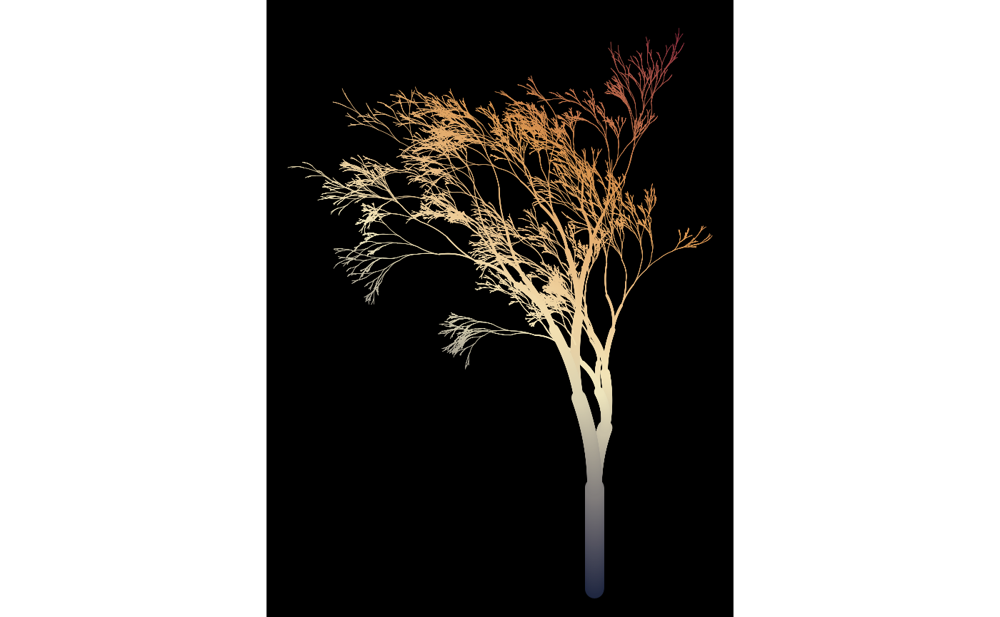
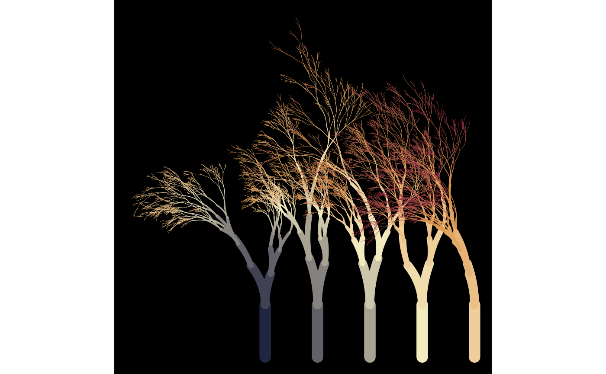
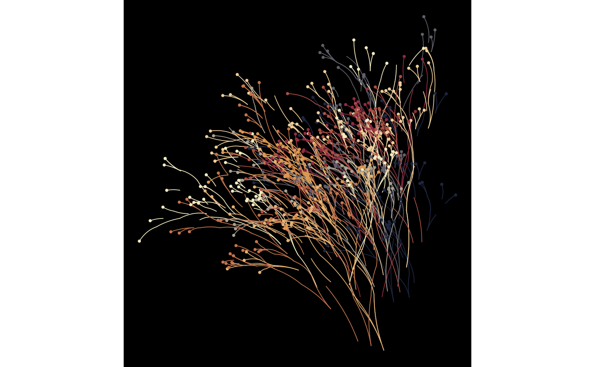
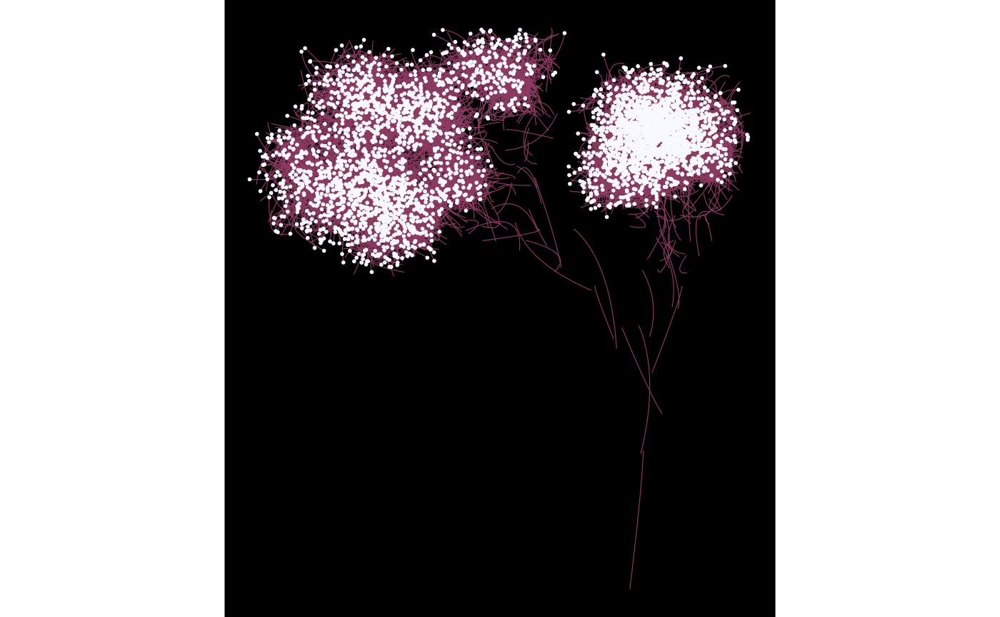

Some arguments to flametree_grow() take numeric input,
but seg_col, seg_wid, shift_x,
and shift_y all take functions as their input, and are used
to control how the colours (seg_col) and width
(seg_wid) of the segments are created, as well as the
horizontal (shift_x) and vertical (shift_y)
displacement of the trees are generated. Functions passed to these
arguments take four inputs: coord_x, coord_y,
id_tree, and id_time as input. Any function
that takes these variables as input and produces a numeric vector of the
same length as the input can be used for this purpose. However, as a
convenience, four “spark” functions are provided that can be used to
create functions that are suitable for this purpose:
spark_linear(), spark_decay(),
spark_random(), and spark_nothing(). Arguments
passed to one of the spark functions determine the specific function is
generated. For example, this returns a function that is linear in
coord_x and coord_y:
spark_linear(x = 2, y = 3)
#> function (coord_x, coord_y, id_tree, id_time)
#> {
#> (x * coord_x) + (y * coord_y) + (tree * id_tree) + (time *
#> id_time) + constant
#> }
#> <bytecode: 0x5630a51f8158>
#> <environment: 0x5630a51f4450>We could use this function to control how the colours in the tree change:
flametree_grow(
time = 12,
seg_col = spark_linear(x = 2, y = 3)
) %>%
flametree_plot()
Different parameter settings will produce different linear gradients. For example, we could have the colours change linearly across tree number and time, and have the horizontal spacing of the trees vary linearly with tree number:
flametree_grow(
trees = 5,
time = 10,
seg_col = spark_linear(time = 1, tree = 2),
shift_x = spark_linear(tree = 1)
) %>%
flametree_plot()
The previous examples all use spark_linear(), but
flametree provides three other spark function generators. The
spark_nothing() generator produces spark function that
always returns zero, which is occasionally useful, wheras the
spark_random() function injects uniform random noise. This
can be useful with the “native flora” plot style:
flametree_grow(
trees = 10,
time = 7,
shift_x = spark_random(multiplier = 1),
shift_y = spark_random(multiplier = 1)
) %>%
flametree_plot(style = "nativeflora")
Defining your own spark function can be fun…
jittr <- function(coord_x, coord_y, id_tree, id_time) {
stats::runif(n = length(coord_x), min = -.2, max = .2)
}
flametree_grow(
time = 12,
seg_wid = spark_linear(constant = .2),
shift_x = jittr,
shift_y = jittr
) %>%
flametree_plot(
palette = c("hotpink4", "ghostwhite"),
style = "wisp"
)
…though the results can be peculiar!